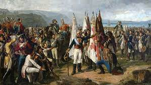
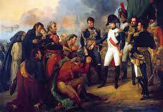

Periodos
Maestra Imelda Pérez Jímenaz
Las Guerras Napoleonicas
En 1808, Napoleón decidió invadir España: hizo abdicar a Carlos IV y a su hijo Fernando VII al trono de España y nombró rey a su hermano José Bonaparte.
Esto
provocó el estallido de una guerra en la que el ejército español, aliado con Portugal y Gran Bretaña, logró no sólo expulsar a los franceses, sino invadir
parte de su territorio sur. Para 1811, Napoleón Bonaparte prácticamente dominaba Europa.
¿Qué paises invadió Napoleón Bonaparte?
Napoleón Bonaparte inavdió España, dominó Europa, invadió Rusia, Moscú.

¿Quien era Napoleón Bonaparte?
el 9 de noviembre de 1799, un oficial llamado Napoleón Bonaparte llevó acabo un exitoso golpe de Estado que derrocó al Directorio y se nombró consul.
